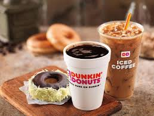
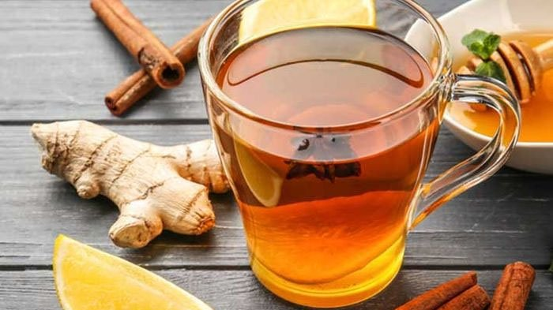
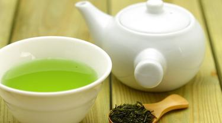
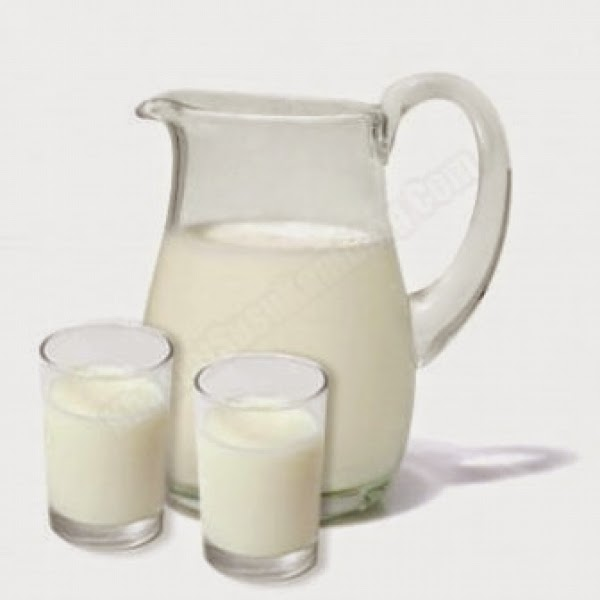

Tentang Kue Donat |
|
| .:: | |
Menu minuman untuk menemani makanan donatDi zaman yang serba hits dan kekinian, nggak cuman makanan aja yang jadi tren. Akan tetapi berbagai minuman pun sebagai incaran kuliner pun juga cocok. Pasalnya, ada beragam minuman yang juga bisa mendadak jadi populer. Entah karena rasanya, bentuk penyajiannya, namanya, atau keunikan lainnya. Secara mudah deretan variasi minuman jadi hits dan kekinian. Apalagi di musin Hujan deras akhir-akhir ini terus mengguyur jalanan, membuat kita lebih sering ada di rumah sambil menikmati sejuknya hujan. Agar Anda semakin menikmati suasana hujan dan menghangatkan tubuh karena dinginnya hujan, dan di tambah lagi dengan donat yang manis lembut dan varian topik yang berbeda lanjut ditemani sepasang dan segelas minuman hangat. 1. Minuman Kopi >Saat ini,kopi menjadi tren gaya hidup.Mulai dari anak kecil,remaja,hingga dewasa menpunyai kafein satu ini.Sambil menikmati secangkir kopi, tentu akan terasa sangat nikmat jika di temani sama Donat kentang goreng.Makanan pendamping minum kopi pasangan dengan donat goreng kentang sangat cocok karena mempuyai varian rasa dari donat yang manis ,dan empuk.aduhh,,,Belum lagi jika donat disajikan saat masih hangat dan keluar dari panggangan.Penyajian makanan pendamping bertujuan agar sensasi minum kopinya semakin terasa.Tidak perjaya? Yuk coba nikmati donat kentang goreng dengan secangkir kopi .yummy. 2. Minuman wedang Jahe
Minuman ini memiliki efek anti-peradangan sehingga bisa mengurangi nyeri akibat radang tenggorokan yang diakibatkan oleh musim hujan, dan minuman ini cocok ditemani oleh makanan Donat enak jadi padanan minuman hangat. Tekstur empuk donat dengan aneka topping favorit cocok untuk minumam jahe,. Jika ingin rasanya tidak terlalu "berat", pilih saja donat dengan gula halus atau donat tanpa topping. 3.Teh hijau Minuman saat ini cocok dimakan dengan donat selain manfaat untuk kesehatan, teh hijau bermanfaat untuk meningkatkan mood, daya ingat dan konsentrasi,". Bila anda merasa tidak konsentrasi dan merasa Lelah anda bisa coba untuk meminum teh hijau ini dan ditemani donat yang sangat lezat dengan berbagai rasa yang menarik. 4. Segelas Susu Hangat
Salah satu teman minuman susu yang nikmat adalah donat goreng. Cemilan ini sudah terlalu popular tidak di kalangan masyarakat.tentu saja, donat goreng juga banyak varian topiknya dan juga banyak di sukai karena rasanya yang manis dan gurih.donat goreng sangat cocok berdampingan secangkir susu yang manis dan hangat.selain itu donat goreng juga tak membuat Milk Lovers terlalu kenyang.yuuhhh ayo cobain pasti enak kok.selamat di nikmati nya gaes.
|
|
€CopyRight Design |
|